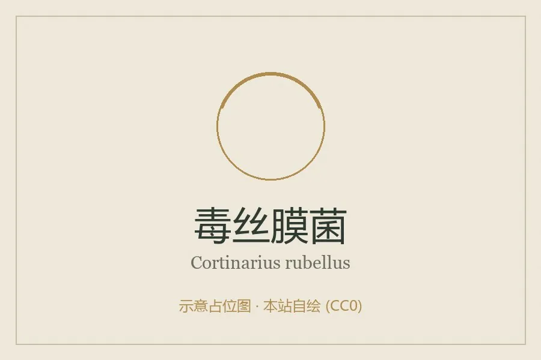

真菌 · 真菌界
毒丝膜菌 Cortinarius rubellus

丝膜菌科蘑菇，菌盖红褐、菌柄带黄色环带，含奥来毒素，属剧毒菌，可致不可逆肾衰竭，禁止采食。
- 分类
- 门担子菌门纲伞菌纲目伞菌目科丝膜菌科属丝膜菌属
- 栖息环境
- 针叶林与酸性沼泽林地，与云杉、松形成外生菌根
- 地理分布
- 北欧、中欧与北美针叶林分布，中国东北、西南高山针叶林有近缘种
- 保护级别
- 暂无评估；种群随成熟针叶林减少而下降
物种志
毒丝膜菌的子实体中等，菌盖直径 3–8 厘米，初期钟形，后平展，中央有凸起，表面红褐、橙褐至锈褐色，具细纤维状鳞片，边缘常附丝膜残迹。菌肉淡黄，气味微弱带萝卜味。菌褶锈褐色，较宽，弯生。菌柄长 5–12 厘米，直径 0.8–1.5 厘米，红褐至橙褐，表面有明显的黄色环带或蛇皮状纹。孢子印锈褐色。
毒丝膜菌生于针叶林与酸性沼泽林地，与云杉、松形成外生菌根，夏秋发生。它含有奥来毒素，属剧毒菌：误食后潜伏期长达 2–3 周，早期仅有口渴、乏力，随后出现肾小管损伤，可发展为不可逆的肾衰竭，需长期透析或肾移植。由于潜伏期长，患者常无法把症状与吃菌联系起来，极易延误诊治。它与可食的某些丝膜菌外形相近，丝膜菌属种类繁多、鉴定困难，应一律不采食。
形态与习性
- 菌盖直径 3–8 厘米，红褐至锈褐，有细纤维鳞片
- 菌褶锈褐色，较宽，弯生
- 菌柄长 5–12 厘米，红褐色，带黄色环带
- 孢子印锈褐色，孢子具小疣
- 毒性含奥来毒素，可致不可逆肾衰竭，禁止采食
- 潜伏期长达 2–3 周，极易延误诊治
趣味知识
- 毒丝膜菌的毒素是奥来毒素，攻击肾小管，可造成不可逆的肾衰竭。
- 它的中毒潜伏期长达 2–3 周，患者往往想不到是几周前吃的那顿蘑菇。
- 欧洲多起肾移植病例与误食丝膜菌属有关，其中毒丝膜菌是主要元凶。
- 丝膜菌属有上千种，孢子印锈褐色，鉴定极难，采菌者应整属回避。